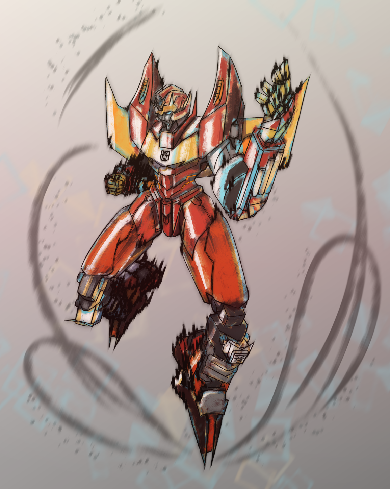
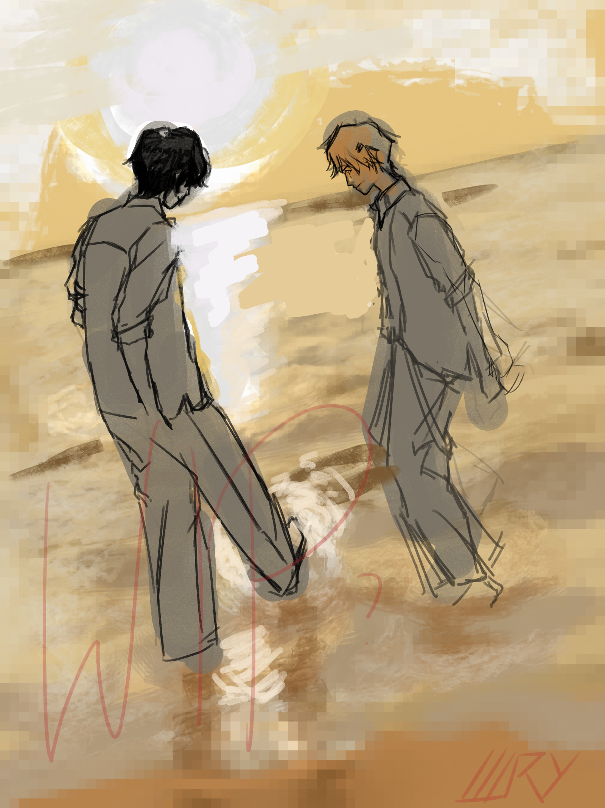
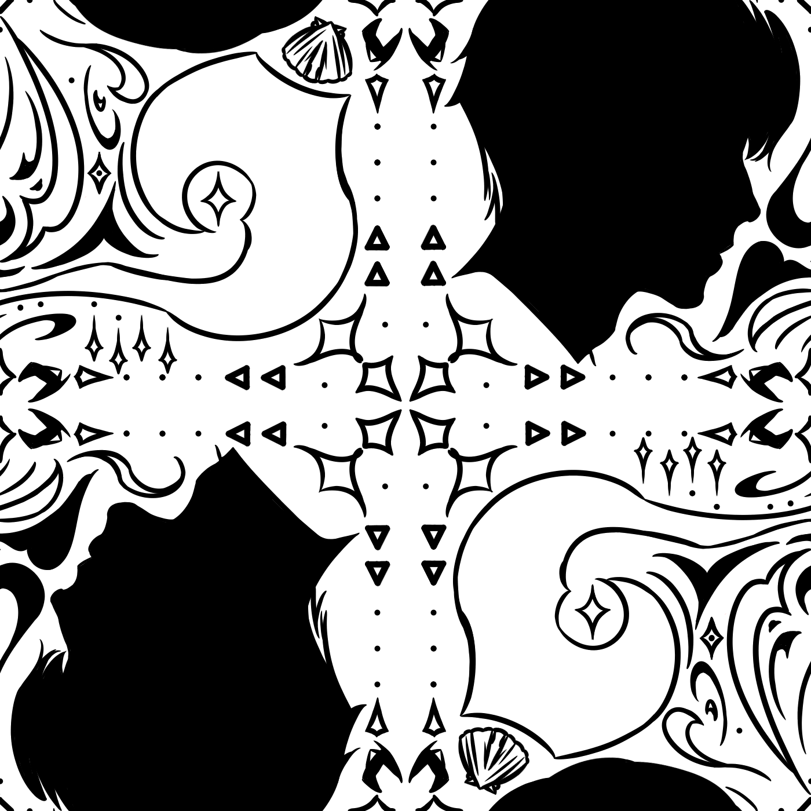
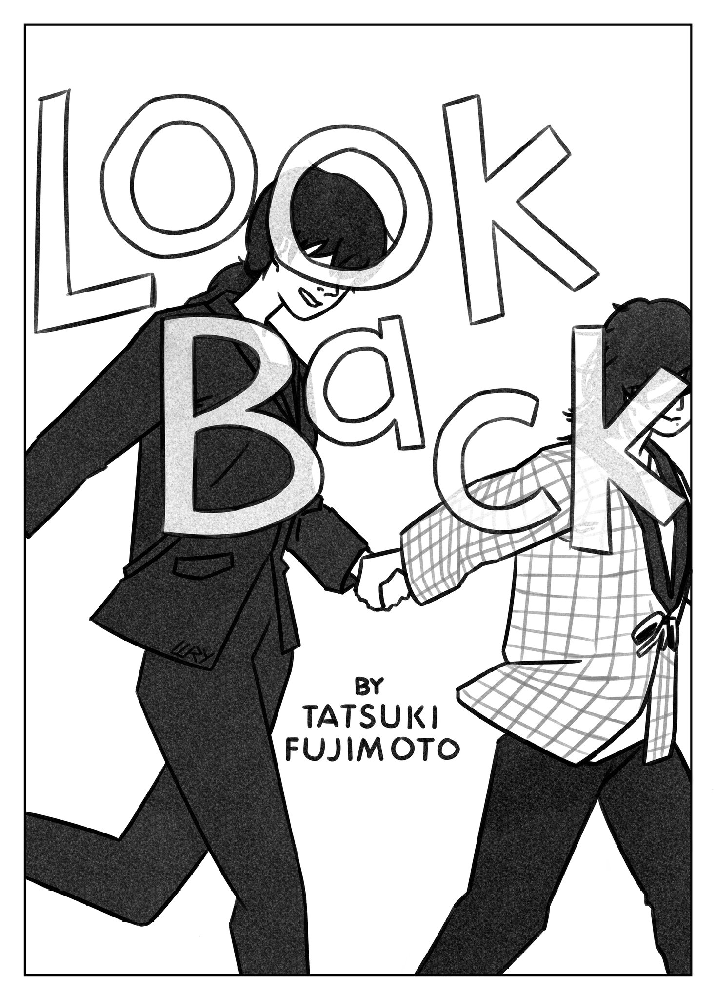
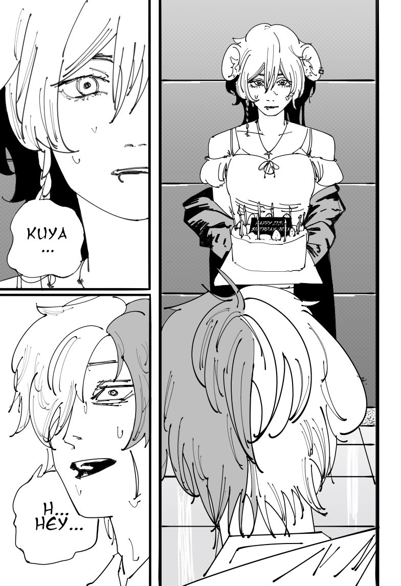
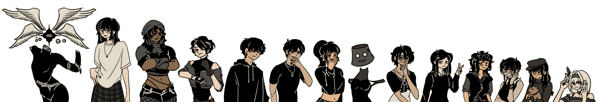

illustrations
2026 digital
×

Progress Report
I have not had much time to create many digital illustrations in the last two months, as I jumble between school and other creative projects. But I hope I can evolve my work further, I really want to mix digital and physical art.
|
2025 digital
warning: will need to press back or close image from the browser to return to the site!
 |
 |
 |
O M G
I did not realize how little I drew digitally in 2025 beside my Devil May Cry animation and some illustrations! My classes at the time used a lot of physical mediums, so I focused on those last year!!
|
2025 physical
warning: will need to press back or close image from the browser to return to the site!
I wish I could show all of my physical work on here in their best light, but I was not all that good at taking pictures of them before.
Here are a couple of my favorites:
2024 and Before 2024
warning: will need to press back or close image from the browser to return to the site!
|
I was kind of jumping around..
I did a lot of art out of my own interests, still do, but I barely made anything without someone else prompting me to do it. I did a lot of art trends, and even made my friends at the time into sprites of a game for fun.
I do not really draw much like this anymore, but I would like to incorporate it with more digital practices. Most of my old stuff is littered in my pc or my old laptop, and most of it can be viewed on my illustration instagram linked in the contacts section of this website, but I would like to share on this portfolio site the ones I think turned out the best:
|
 |
 |
.png) |

<Return a Page>